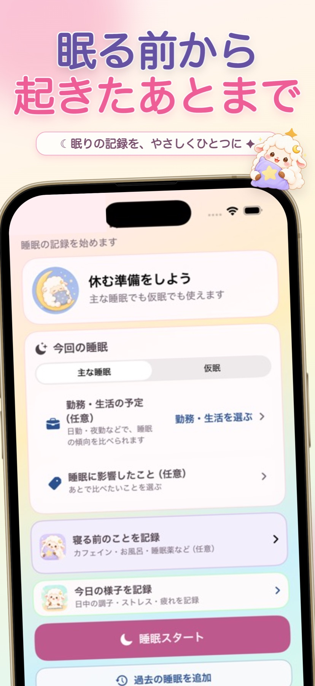

眠る前に
主な睡眠か仮眠を選び、睡眠スタート。寝る前のことも記録できます。
☾ 眠りの記録を、やさしくひとつに ✦
睡眠時間も、今日の調子も
あなたのペースで記録して、振り返ろう
寝る前の記録から、睡眠中のタイマー、起床後と日中の様子まで。ねむもこが毎日の記録をひとつにつなぎます。
iPhone・iPad対応 ・ アカウント登録不要 ・ 記録は端末内に保存


ONE DAY WITH NEMUMOKO
必要な項目だけで大丈夫。タイマーを使わず、睡眠時刻を手動で入力することもできます。
主な睡眠か仮眠を選び、睡眠スタート。寝る前のことも記録できます。
起床を記録して、眠りの様子や起床後の状態を残します。
日中の調子、ストレス、疲労や生活習慣を、気になる分だけ記録します。
REAL APP SCREENS
現在のアプリ画面をもとに制作したアートボードです。端末を切り替えてご覧いただけます。
LOOK BACK, YOUR WAY
カレンダーとリストで一日を確認。グラフでは睡眠時間や起床後の状態、日中の調子などを期間ごとに見返せます。
「ねむもこ分析」は、対象期間に睡眠記録が10件以上あると表示されます。生活要因の比較には各グループ5件以上の記録が必要です。直近7日の振り返りでは、睡眠のまとめや状態を確認できます。
分析は記録の傾向を示すもので、原因の特定や診断は行いません。
日付ごとの記録を見つけやすく。
眠りと体調の変化を期間で確認。
記録を重ねて、自分の傾向を見つめる。
YOUR RECORDS, YOUR DEVICE
睡眠・体調・生活習慣・服薬・メモの記録は端末内に保存します。アカウント登録は不要です。広告表示と祝日情報取得に伴う外部通信については、プライバシーポリシーをご確認ください。
プライバシーポリシーを見る ↗GOOD NIGHT, GOOD MORNING
ねむもこは、iOS 17以降のiPhone・iPadで使える睡眠と体調の記録アプリです。